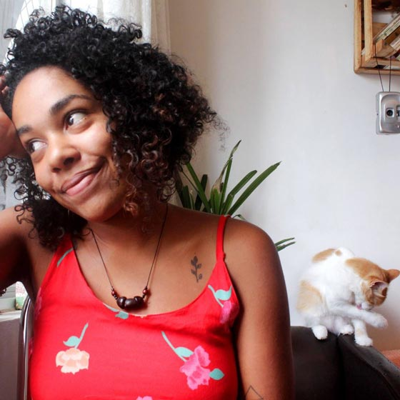
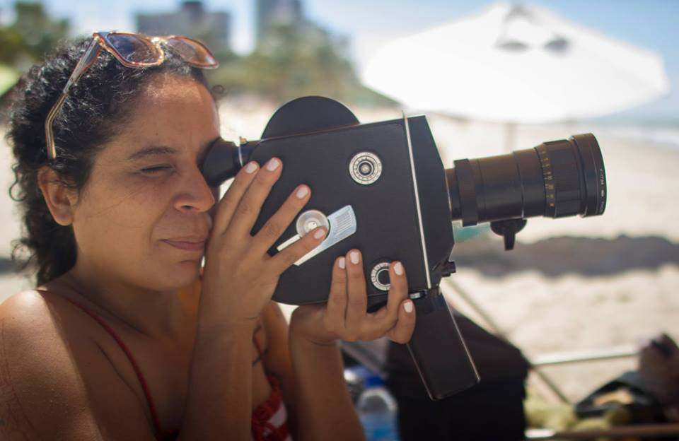
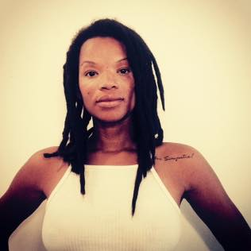
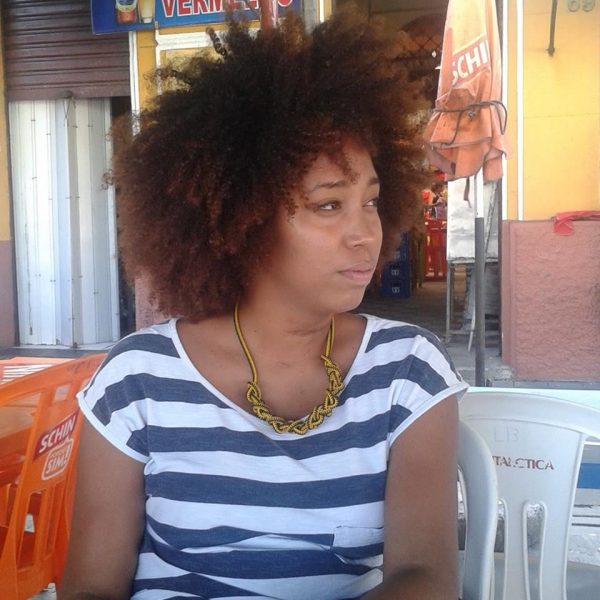

Funções / Cineclubismo
As informações de cada perfil são de responsabilidade das profissionais.
Você quer conhecer profissionais de quais estados?
Marcar/Desmarcar todos
CARREGANDO ...
 Amanda Ramos (PE)
Amanda Ramos (PE)
Amanda Ramos
29 anos | Olinda (PE)
aamandaramos@gmail.com
Amanda Ramos é cineclubista, curadora e produtora cultural independente com experiência em festivais e mostras de cinema; Bacharelanda em Ciências Sociais (UFRPE) e integrante do Quebrando Vidraças, coletivo de cinema e gênero. Ministra oficinas de formação de cineclubes e palestras relacionadas ao tema em escolas, entidades sociais e municípios de Pernambuco.
Outras atividades de Amanda Ramos
Produção | Programação e curadoria
Bea Gerolin (PR)
Bea Gerolin
23 anos | Curitiba (PR)
beagerola@gmail.com
Bea Gerolin é realizadora, roteirista e diretora.
Outras atividades de Bea Gerolin
Direção
Direção de Arte |
Oficinas e cursos livres
|
Pesquisa e desenvolvimento |
Roteiro
Amostra de vídeo
 Carine Fiúza (PB)
Carine Fiúza (PB)
Carine Fiúza
27 anos | João Pessoa (PB)
carinefiuza@gmail.com
Graduanda em Rádio e Tv na Universidade Federal da Paraíba e colaboradora no Laboratório Audiovisual de Produção - LAP que integra o departamento de Cinema e Comunicação da UFPB. Concluiu os curso técnicos de Direção, Ass. de direção e Produção executiva pelo CANNE. Atualmente é Produtora, diretora e fotografa freelancer. Ministra cursos livres de cinema e audiovisual. Como diretora elenca os trabalhos: No escuro (2009), Autonomia Mulheres Rurais (2014), Campanha contra lesbofobia (2016); Como produtora: “Capela” (2014), “O Lendário…” (2014), “Ilha” (2014), “Nó do diabo” (2017). Além dos DVDs de “Chico César” para o Canal Brasil e o “Quinteto convida” para Tv UFPB.
https://www.facebook.com/carine.fiuza.3
Outras atividades de Carine Fiúza
Assistência de direção |
Assistência de fotografia |
Coordenação de projeto |
Direção |
Exibição |
Fotografia still |
Gerência de mídia |
Oficinas e cursos livres |
Pesquisa e desenvolvimento |
Produção
Amostra de vídeo
 Íldima (PE)
Íldima (PE)
Íldima
35 anos | Recife (PE)
ildima@gmail.com
Pós graduada em Estudos Cinematográficos pela Unicap (PE), Íldima iniciou suas pesquisas sobre linguagem audiovisual ainda no processo de graduação, na Uneb (BA), tendo publicado a tese “Cinema, indústria e história: três momentos do cangaço no cinema brasileiro”, em 2004. Durante 3 anos realizou reflexões cinematográficas em seu blog “Embriaguez da Rapariga”. Em 2016, iniciou seu estudo sobre temporalidade e imagem com o primeiro trabalho titulado “O peso da câmera lenta”. Neste mesmo ano, formou o coletivo “Alastrado produções artísticas” no qual atual como diretora de arte, produtora e assistente de fotografia. Concilia pesquisa sobre a natureza da imagem e produção audiovisual.
https://www.facebook.com/alastrado/
Outras atividades de Íldima
Assistência de direção |
Coordenação de projeto |
Crítica |
Direção de arte |
Oficinas e cursos livres |
Pesquisa e desenvolvimento |
Produção |
Programação e curadoria |
Roteiro
 Iris Regina (PE)
Iris Regina (PE)
Iris Regina
31 anos | Olinda (PE)
irisregin@gmail.com
Sou nascida no interior de São Paulo onde fiz faculdade de Artes Visuais, mas estou em Pernambuco desde o ano de 2012, onde fiz algumas especializações na área de designer gráfico e hoje dou aula de educação popular na área. Aqui me apaixonei pelo cinema e logo comecei com o cineclubismo e até hoje faço parte do Cineclube Bamako com foco no cinema africano e diáspora Cursos de Roteiro com Marcelo Paes de Carvalho, Laboratório Audiovisual com Pedro Severien, alguns cursos de captação e fotografia, áudio e produção. Fiz curadoria e juri em alguns festivais do estado como o Festival de Cinema de Triunfo, Recifest, Festicine e a I Semana de Comunicação Popular de Recife. Trabalhei na produção da mostra o CRUA (Cinema Rural Andarilho) que aconteceu em algumas cidades do interior de Pernambuco e Paraíba, também na mostra Olhar do Alto no Festival Olinda Coco Zumbi. Integro a produtora Studio Ru@ do CCJ-Recife (Centro de Comunicação e Juventude).
Outras atividades de Iris Regina
Assistência de Direção |
Assistência de Fotografia |
Continuidade |
Design gráfico |
Direção |
Pesquisa e desenvolvimento |
Programação e curadoria |
Roteiro
Amostra de vídeo
 Josy Macedo (CE)
Josy Macedo (CE)
Josy Macedo
35 anos | Fortaleza (CE)
josy.macedo@gmail.com
É graduanda em Cinema e Audiovisual pela Universidade Federal do Ceará. Possui graduação em Administração de Empresas; pós-graduação em Gestão de Organizações do Terceiro Setor; e pós-graduação em Gestão Pública Municipal. No âmbito da cultura, é produtora cultural desde 2005, quando iniciou a carreira como atriz e produtora teatral. No cinema, dirigiu o curta "Estamos Bem?", produziu os curtas "21m" e "Um Assunto Meio Delicado", o cineclube Cine Rebuceteio e também participou da produção da Mostra Cine Nordeste.
Outras atividades de Josy Macedo
Atuação |
Audiodescrição |
Direção |
Direção de arte |
Oficinas e cursos livres |
Pesquisa e desenvolvimento |
Produção |
Produção executiva |
Roteiro
Amostra de vídeo
 Keila Serruya (AM)
Keila Serruya (AM)
Keila Serruya
Manaus (AM)
keilaserruya@gmail.com
Formada em comunicação social, manauara, diretora audiovisual, artista visual e produtora. Diretora de obras audiovisuais “Nessa Cidade Todo Mundo Já Bebeu na Bica” e “ASSIM”, que circularam em festivais nacionais e internacionais e hoje estão sendo exibidos em canal fechado. Produtora e assistente de direção em projetos series, curtas, longas metragens, espetáculos e intervenções. Esteve a frente de projetos como MIVA - Mostra Internacional de Videodança da Amazônia, Até o Tucupi, Papo por frame, série de TV na Boca do Povo, serie de TV infantil Buzzz&Bizz, Noite Negra, Grito Rock Manaus dentre outros. Atualmente faz parte do grupo Picolé da Massa e é gestora do DaVárzea das Artes.
Outras atividades de Keila Serruya
Assistência de Direção |
Continuidade |
Direção |
Edição |
Exibição |
Fotografia Still |
Pesquisa e desenvolvimento |
Produção
Amostra de vídeo
Lia Letícia (PE)
Lia Letícia
41 anos | Recife (PE)
lia.leticia@gmail.com
Além de escrever e dirigir seus próprios filmes, trabalha como diretora de arte. É educadora no projeto de educação audiovisual para crianças Escola Engenho e no Tardes de Quintal/Recife. Também é curadora e coordena o Cinecão, plataforma de exibição de trabalhos hibrídos em audiovisual, além de projetos independentes de arte na Maumau|Recife.
https://www.youtube.com/channel/UC3V5nfblgaqKdKy-XZj3ymA?view_as=public
Outras atividades de Lia Letícia
Cenografia |
Coordenação de projeto |
Direção |
Direção de arte |
Edição |
Figurino |
Oficinas e cursos livres
|
Pesquisa e desenvolvimento |
Produção |
Programação e curadoria |
Roteiro
Amostra de vídeo
 Maíra Zenun (DF)
Maíra Zenun (DF)
Maíra Zenun
34 anos | Brasília (DF) e Lisboa (Portugal)
mairazenun@yahoo.com.br
Fotógrafa e investigadora, com formação nas áreas da sociologia e do cinema, desde 2007 desenvolvo trabalho autoral e coletivo, em imagens, vídeos e textos poéticos, expostos em coleções privadas, publicações impressas, virtuais, festivais, mostras, livros e blogs.
http://floresdemaiomairazenun.blogspot.br
Outras atividades de Maíra Zenun
Direção de Fotografia |
Oficinas e cursos livres |
Pesquisa e desenvolvimento |
Produção |
Roteiro
Amostra de vídeo
 Michelle Andrews (AM)
Michelle Andrews (AM)
Michelle Andrews
32 anos | Manaus (AM)
michelleandrewsdifusao@gmail.com
Michelle Andrews, manauara, é produtora cultural, videomaker, fundadora do Coletivo Difusão (AM), autodidata atua em projetos socioculturais e ambientais desde 2004. Ministrou oficina e workshops no campo da produção audiovisual. Elabora e executa projetos de diversas linguagens desenvolvidos em território brasileiro, em especial na região Amazônica. Atualmente é coordenadora da MIVA: Mostra Internacional de Videodança, Semana do Audiovisual em Manaus e Centro Popular do Audiovisual
https://www.facebook.com/michelleandrewsnorte
Outras atividades de Michelle Andrews
Captação de Recursos |
Edição |
Oficinas e cursos livres |
Roteiro
Amostra de vídeo
 Monique Rodrigues (RJ)
Monique Rodrigues (RJ)
Monique Rodrigues
Rio de Janeiro (RJ)
monique010982@gmail.com
Sou formada em Cinema com especializações em roteiro e pesquisa, tendo experiência em festivais, mostras, curta metragens e produção de conteúdo para web.
Outras atividades de Monique Rodrigues
Coordenação de Projeto |
Crítica |
Direção |
Direção de Arte |
Pesquisa e desenvolvimento |
Produção |
Programação e curadoria |
Roteiro
Amostra de vídeo
 Naymare Azevedo (RN)
Naymare Azevedo (RN)
Naymare Azevedo
24 anos | Natal (RN)
naymaresazevedo@gmail.com
Naymare Azevedo, produtora executiva, gestora de políticas públicas e marketing cultural. Diretora criativa do Espaço Criativo Aayabá e coordenadora do projeto de formação criativa do AFROTONIZAR.
Outras atividades de Naymare Azevedo
Assistência de Direção |
Atuação |
Captação de Recursos |
Coordenação de Projeto |
Direção |
Oficinas e cursos livres
|
Pesquisa e desenvolvimento |
Produção |
Produção executiva
Amostra de vídeo
Prix Clementino (RJ)
Prix Clementino
30 anos | Rio de Janeiro (RJ)
sanclepriscila@gmail.com
Estudei Comunicação Social - Jornalismo, na PUC-Rio. Comecei a vida profissional trabalhando com produção, na produtora No Ar Comunicação, de Alice Maria Reininger, renomada jornalista e principal responsável pela criação do Globo News. Trabalhando como assistente de direção e produtora de reportagem, no Programa Especial, da TV Brasil. E no Programa Mãe & Cia, do GNT. Tendo sido assistente da diretora Angela Patrícia Reiniger -Três Irmãos de Sangue (2006), durante 5 anos. Paralelamente, realizei trabalhos como freelancer de direção, produção, repórter e roteiro, atuando em vídeos clipes, vídeos institucionais e trabalhos de produção local e produção de reportagem.
Outras atividades de Prix Clementino
Assistência de Direção |
Direção |
Pesquisa e desenvolvimento |
Produção |
Roteiro
Amostra de vídeo
 Quézia Lopes (RJ)
Quézia Lopes (RJ)
Quézia Lopes
29 anos | Niterói (RJ)
queziamaria@yahoo.com.br
Bacharela em Cinema e Audiovisual pela Universidade Federal Fluminense (UFF), com experiência como diretora, roteirista, produtora, editora e assistente de direção e de produção, no cinema e audiovisual independentes.
Quézia Lopes's Portfólio
Outras atividades de Quézia Lopes
Assistência de Direção |
Coordenação de Projeto |
Crítica |
Direção |
Edição |
Pesquisa e desenvolvimento |
Produção |
Programação e curadoria |
Roteiro
Amostra de vídeo
 Sassá Souza (SC)
Sassá Souza (SC)
Sassá Souza
Florianópolis (SC)
sa.souzasss@gmail.com
Ativista Cineclubista Negra, fez parte do Cineclube Mate com Angu de onde saiu para fundar com outras feminista da Baixada Fluminense do RJ o Facção Feminista Cineclube. Antes disso lutou pela Pedagogia Libertária e implementação da Lei 10639/03 na cidade de Pelotas, no sul do RS junto ao Coletivo Negada, onde trabalhava com Educação Escolar Quilombola e Desenvolvimento Étnico Racial. Atualmente mora em Florianópolis -SC trabalhando na Secretaria de Ações Afirmativas e Diversidade da Universidade Federal de Santa Catarina e ativa o CineClube Ekô.
Outras atividades de Sassá Souza
Edição |
Gerência de Mídia |
Produção |
Programação e curadoria |
Roteiro
Amostra de vídeo
 Thais Scabio (SP)
Thais Scabio (SP)
Thais Scabio
39 anos | São Paulo (SP)
thaisscabio@gmail.com
Diretora, Produtora, educadora e cineclubista. Coordenadora dos projetos "JAMAC Cinema Digital" e " coletivo Mascate Cineclube", em São Paulo. Trabalha com cinema digital desde 2002. Graduada em Comunicação Social, Especialista em Direção de Cinema e Video pela ELCV de Santo André. Sócia-fundadora da produtora Cavalo Marinho Audiovisual, foi produtora executiva da animação "Graffiti Dança, ganhadora do prêmio de Melhor Curta Brasileiro do Anima Mundi 2013. Atualmente produz e dirige a websérie "Terror em um minuto" e esta em desenvolvimento de seu primeiro longa-metragem.
http://www.cavalomarinhoaudiovisual.com
Outras atividades de Thais Scabio
Direção |
Oficinas e cursos livres |
Produção |
Produção executiva |
Roteiro
Amostra de vídeo
Thamires Vieira (BA)
Thamires Vieira
23 anos | Cachoeira (BA)
thamiresvieirafjl@gmail.com
Thamires Vieira é realizadora audiovisual; membro do coletivo TELA PRETA, movimento de cinema negro, graduanda em Cinema pela UFRB, membro do Cineclube Mario Gusmão.
Outras atividades de Thamires Vieira
Assistência de Direção |
Coordenação de Projeto |
Direção |
Pesquisa e desenvolvimento |
Produção Executiva |
Programação e curadoria